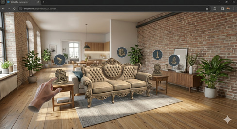

Realidad Aumentada y 3D: La web rompe la pantalla

La integración de tecnologías 3D directamente en el navegador ha marcado un punto de inflexión en la forma en que consumimos contenido digital. Gracias a librerías como Three.js, los desarrolladores pueden ahora crear escenas tridimensionales complejas, con luces, sombras y texturas realistas, que se ejecutan de manera fluida en cualquier ordenador o smartphone moderno. Ya no es necesario que el usuario instale pesadas aplicaciones de escritorio o apps móviles para visualizar un producto en tres dimensiones; ahora, el motor gráfico del propio navegador es capaz de renderizar estos objetos con una latencia mínima, democratizando el acceso a experiencias visuales de alta fidelidad.
Este avance se ha potenciado con la llegada del estándar WebXR, que permite fusionar el contenido digital con el mundo real mediante la Realidad Aumentada (AR) y la Realidad Virtual (VR). Sectores como el comercio electrónico están aprovechando esta tecnología para permitir que los clientes "coloquen" virtualmente muebles en su salón o se prueben accesorios antes de comprarlos, todo desde una simple URL. Esta capacidad de interacción inmersiva elimina las barreras físicas de la pantalla, transformando la navegación web en una experiencia táctil y espacial que redefine por completo el concepto de interfaz de usuario.
El reto técnico de estas tecnologías reside en la optimización de los activos digitales. Trabajar con modelos 3D requiere un equilibrio perfecto entre la calidad visual y el peso de los archivos para no penalizar la velocidad de carga del sitio. Los desarrolladores deben dominar técnicas de compresión de mallas y gestión de texturas, así como entender el flujo de trabajo de los motores de renderizado web. Es una disciplina que combina la ingeniería de software con el diseño artístico, abriendo un abanico de posibilidades para la próxima generación de sitios web espaciales.
Nuestra valoración: En Conquer Academy, entendemos que dominar esta simbiosis entre código y entornos inmersivos es fundamental para crear la próxima generación de sitios web, donde cada visita se sienta como una experiencia espacial diseñada exclusivamente a medida.